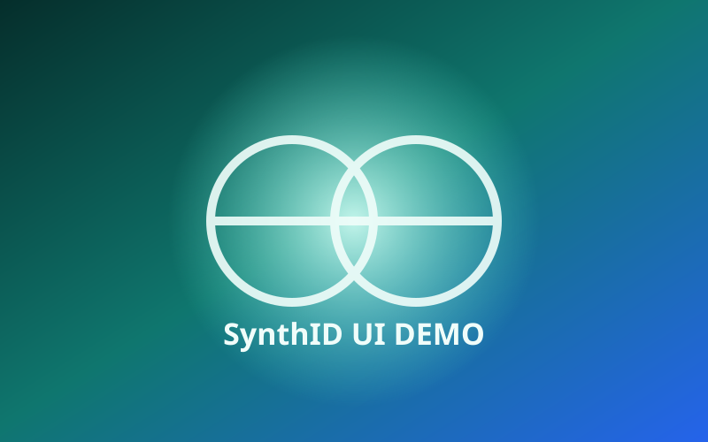

AI IMAGE BADGE 動作テスト v…
拡張機能のポップアップから開いたテストページです。テスト画像は800×500pxです。画像右上のバッジを押すと、判定理由が表示されます。

Stable Diffusion の生成メタデータがあります。クリックすると判定方式を確認できます。C2PA trainedAlgorithmicMedia のテスト用記録があります。
拡張機能のポップアップから開いたテストページです。テスト画像は800×500pxです。画像右上のバッジを押すと、判定理由が表示されます。

Stable Diffusion の生成メタデータがあります。クリックすると判定方式を確認できます。C2PA trainedAlgorithmicMedia のテスト用記録があります。